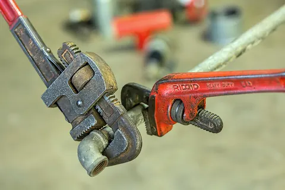
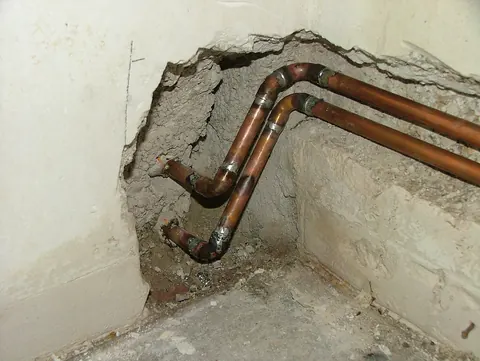
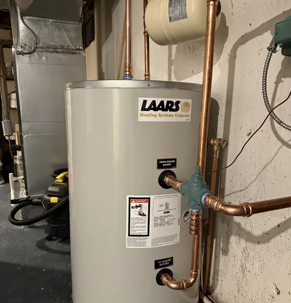
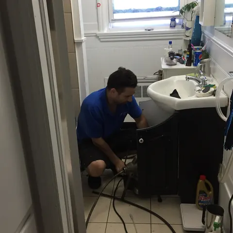
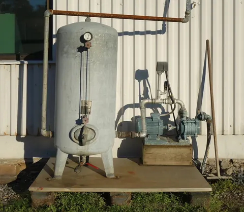
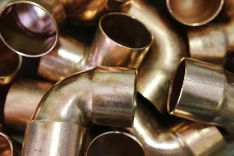
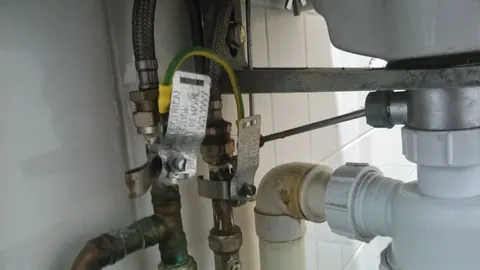
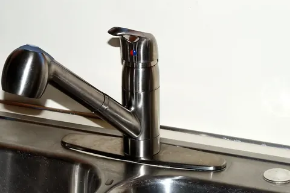

Photo credits
The photos on this website are sample photos under open licences, used until Master Phanor Kensly Plumbing sends its own. They show plumbing work in general, not our jobs. The badge is Master Phanor Kensly Plumbing's own logo.

Two pipe wrenches gripping a fitting
“Plumbing Pipe Wrench Repair Edited 2020” by chimpwithcan, CC BY 2.0
The sea
“Turquoise Water to the Horizon” by Coolcaesar, CC BY 4.0
Copper pipes in an opened wall
“Fitting1537” by Borsi112, CC BY-SA 3.0
Water heater (cropped)
“Newly installed water heater in a house in the Mountainview section of Ewing Township” by Famartin, CC BY-SA 4.0
Shower head
“Free shower head image”, rawpixel, CC0
Clearing a sink drain (cropped)
“Sink unclogging repair” by Plumberondemand, CC BY-SA 4.0
Pump and pressure tank
“Hydrophore and pump at sunset” by W.carter, CC BY-SA 4.0
Tiled shower floor
“Shower Base Complete” by Red Moon Sanctuary, CC BY 2.0Home pool and spa
“Finished Pool Construction” by billjacobus1, CC BY 2.0Running tap
“Free close silver water tap”, rawpixel, CC0
Copper fittings
Copper pipe fittings, rawpixel, CC0
Pipes under a sink
“247 Home Rescue back of sink plumbing” by 247homerescue, CC0
Kitchen faucet
“Do It Yourself Plumbing Project” by orcmid, CC BY 2.0


Facts on the site: leak figures and the toilet and meter tests from the US EPA's WaterSense programme (Fix a Leak Week); Provo's water from Times of the Islands, “Quenching Island Thirst”, 2025; the meter's leak star from city water utility guides.